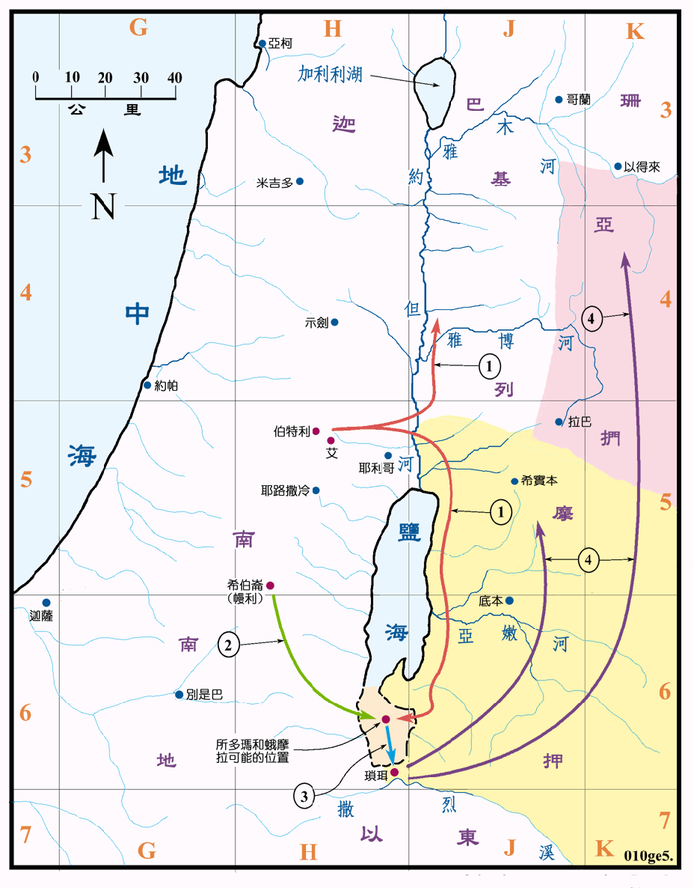

2091～2020BC?

行动线说明
| 序号 | 圣经 | 说明 |
|---|---|---|
| 1 | 创13:4-13 | 罗得离开亚伯兰，往东迁移，直到所多玛(2085?BC)。 |
| 创14:12-16 | 罗得被北方四王所掳，但被亚伯兰救回。（参看创图06） | |
| 2 | 创19:1-14 | 天使自希伯仑来所多玛，罗得接待天使。 |
| 彼后2:6-9 | 罗得是一个义人。 | |
| 3 | 创19:15-22 | 天使救罗得等出城后，耶和华毁所多玛等城 (2067BC) 。罗得和两个女儿逃到小城琐珥。 |
| 4 | 创18:30-19:38，申2:10-21 | 罗得从他两个女儿生摩押和便亚米 (2066?BC)。他们去建了摩押和亚扪两个国家 (2020BC?)。 |
罗得所选的约但河平原，就是约但河谷，当时那里确实是滋润有如同埃及地和耶和华的园子，根据考古学家的证实，河谷中的耶利哥平原和疏割等地，早在主前七、八千年前时，就已有了人类的活动，而且推断已被湮没了的所多玛诸城，也已进步到有了相当可观「罪恶」的文明，这些都足以说明约但平原的富饶，远优於河的西岸。
所多玛等四个城市的位置已不可考，大部份的学者都认为是被淹没在死海的南部，漓三半岛的南方，淹没的时间应该是在2067BC 以后，现今该处的海水很浅，仅有数公尺深，但至今仍没有去发掘过。
罗得被北方四王所掳及获救一节，另绘在<创图六>中。
罗得的两个儿子分别建立了摩押和亚扪两个国家，算起来应该是2020BC 前后的事了，他两人除灭了当地原有的住民利乏音人，得了他们的地接着居住。他们的父亲虽然曾数度受惠於亚伯拉罕，但是日后却经常与亚伯拉罕的后代为敌。